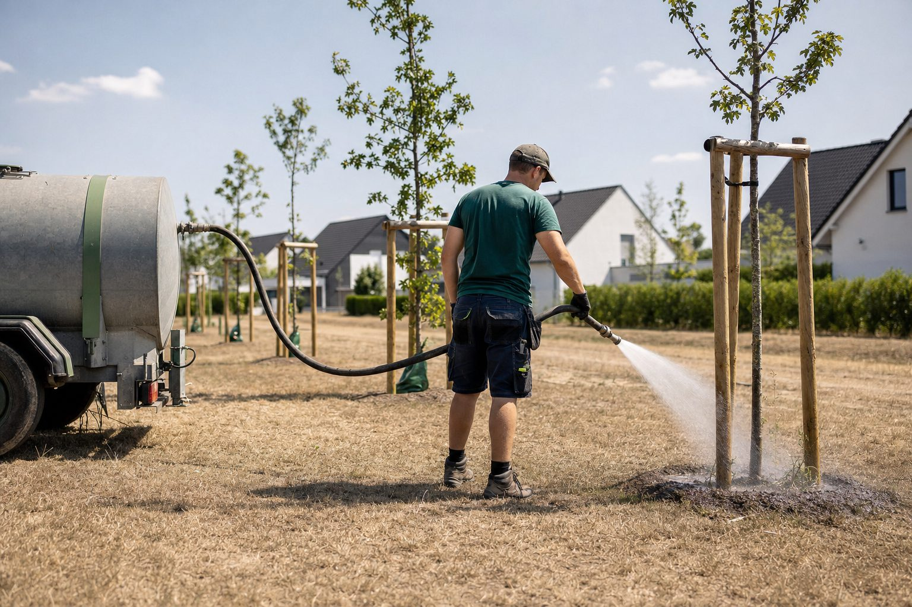

Ausgabe 08/2026: Werkzeuge für den Herbst
E-Rechnung, Wasserentnahmeverbote, Werkzeuge für Bauleiter, die erste Woche der neuen Azubis und ein ifo-Index, der weniger Pessimismus zeigt: Diese Ausgabe ist ein Werkzeugkasten. Wer im Herbst umstellt, arbeitet ab Januar ruhiger.
In dieser Ausgabe
5 Beiträge
ifo im August: Weniger Pessimismus am Bau, mehr Stornierungen im Wohnungsbau
Der ifo-Geschäftsklimaindex steigt auf 88,8 Punkte, das Bauhauptgewerbe blickt weniger düster nach vorn. Im Wohnungsbau sinkt der Anteil der Betriebe mit Auftragsmangel – aber jedes achte Unternehmen meldet Stornierungen. Was das für die Außenanlagen bedeutet.

Die erste Woche: Wie neue Azubis ankommen – und was in den ersten Tagen entscheidet, ob sie bleiben
Anfang August beginnen im GaLaBau die Ausbildungsverhältnisse. Die Abbrüche fallen meist in den ersten Monaten. Was das Gesetz für Jugendliche verlangt, was der Betrieb vorbereiten sollte und warum der Pate wichtiger ist als der Ausbilder.

Werkzeugkasten für Bauleiter: Sechs digitale Helfer, die den Tag kürzer machen
Aufmaß, Bautagebuch, Fotodokumentation, Zeiterfassung, Wetter, Material – für jede Aufgabe gibt es Apps. Welche Kategorien sich im Alltag von GaLaBau-Bauleitern bewähren, worauf es bei der Auswahl ankommt und warum weniger oft mehr ist.

Über 80 Landkreise verbieten die Wasserentnahme – was das für Pflanzungen und Pflege bedeutet
Der Sommer 2026 hat Böden und Flüsse ausgetrocknet. Landkreise von Baden-Württemberg bis Brandenburg untersagen die Entnahme aus Bächen und Flüssen, teils bis Oktober. Für GaLaBau-Betriebe wird Bewässerung damit zur Planungs- und Haftungsfrage.
E-Rechnung: Ab 2027 müssen größere Betriebe elektronisch versenden – eine PDF reicht nicht
Empfangen müssen alle Betriebe seit 2025. Ab dem 1. Januar 2027 gilt die Versandpflicht für Unternehmen mit mehr als 800.000 Euro Umsatz, ab 2028 für alle. Was eine E-Rechnung ist, wer betroffen ist und wie Betriebe die Umstellung im Winter angehen.